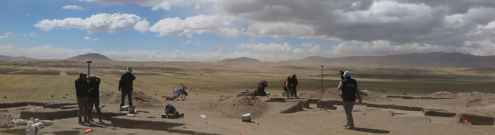

Forager Archaeology Lab
Exploring human behavior through the archaeology of foragers past.
home | publications | resources | news | members | photos | opportunities | contribute
The Forager Archaeology Lab (FAL) investigates forager societies (aka, hunter-gatherers) of the past to better understand humanity in the present. Our species' biological and cultural foundations evolved primarily in forager contexts over some 200 thousand years. The study of ancient forager societies is therefore critical to understanding modern human behavior. To “see” humanity’s deep evolutionary past, the Forager Archaeology Lab examines the archaeological record of past forager societies. Topics of research include forager social organization, nutrition and health, mobility, and technology. Our approaches emphasize field and lab research, quantitative methods, and comparative approaches. Our case studies span over 10,000 years of human history around the globe. Our operations are based largely at the University of Wyoming Department of Anthropology and the Collasuyo Archaeological Research Institute. This website serves to share FAL research.